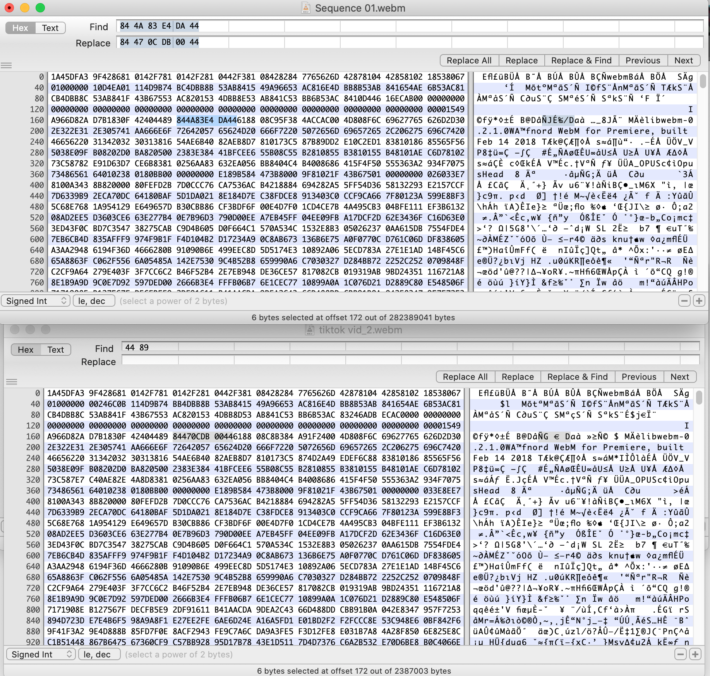

WTTDOTM
The Little Tok of Horrors (2021), 71 minutes, modified WEBM file uploaded to TikTok. 282.4 MB, 720 x 1280, 400kbps. Original file here. Screen recording here.
Update 1/29/21:
As of January 29th, the final version of The Little Tok of Horrors was taken down by TikTok, as you can see from the broken embed above. The original version that was muted still stands, but cannot be linked to. In covering this piece for an article, a Vice reporter reached out to TikTok for a statement, inadvertently alerting them to its presence and resulting in its removal from the platform. You can read the Vice article here.
In my view, with that move by TikTok, the work is complete. The goal was to prove that the way TikTok processes and distributes videos is disconnected from the way humans see and interact with them, and given that TikTok’s platform could not understand that my video was breaking the rules, I claimed that the only way the video would be taken down was if a human intervened. That is exactly what happened. At its core, The Little Tok of Horrors was a lie, and a human had to tell a machine that I was lying. Whether you choose to focus on my deception or the employee’s override, it is useful to know we still have that power.
Description:
The Little Tok of Horrors is the first feature-length movie ever uploaded to TikTok. It consists of a single TikTok, usually limited to 60 seconds, and starts with a brief introduction explaining the project before showing the entirety of Roger Corman’s The Little Shop of Horrors (1960). The full runtime is just under 72 minutes. It was hosted by the platform for 5 days.
Process:
This video was produced over the course of about a week through a series of trials and errors. The basic idea, which I got from a TikTok by @nathan_ham in mid-January but later found out has been around since at least mid-2020, is to sneak a long video into TikTok by disguising it as a shorter one. I think it is easiest to explain this process by going from the original media to the final upload.
Step 1: Don’t get sued. As an account with over 10,000 followers, I have opted in to be part of the TikTok Creator Fund, which gives me approximately $0.00004 per view of my content. While measly, this means I needed to choose a movie in the public domain lest I “make money” off of this project and anger the entertainment industry’s legal might. After some research and vetting of what was truly in the public domain (some lists were not accurate upon deeper review), I settled the The Little Shop of Horrors and acquired a copy from its Archive.org page.
Step 2: Make it mobile. TikTok forces uploads to meet standards of duration, resolution, and file size, but nothing else. Focusing for now on the latter two, as long as a video is at least 720×1280 and less than 286mb, TikTok accepts the upload. Now, the original file size of the MP4 I downloaded from Archive.org was 421.1mb, and its resolution was 640×480 (note the movie’s horizontal orientation vs TikTok’s vertical one). This meant that I had to scale up and rotate its resolution while simultaneously cutting its size. To do this, I popped it in Adobe Premiere, flipped the video 90 degrees, and experimented with drastically degrading different export quality settings until I got to a file size of under 286mb. This took a few tries but ironically resulted in a video file that doesn’t look too bad. If you artificially increase quality while artificially decreasing it at the same time, you get something that looks pretty to what you started with: a low resolution movie file. The main proof that its gone through major modification are the typical markings/artifacts that may remind you of low-quality video streams or early Skype calls. This is because the super low bitrate used to keep the file size small (400kbps) is about the bitrate that those instances use.
Step 3: Trick TikTok. Step 2 covered resolution and size, it is easy to understand how fiddling with scale and quality measures can get our video to fit those requirements. What is less readily conceivable is how to squeeze a 71 minute film into 60 seconds. The answer, it turns out, is to simply assert that that is the case. There are two ways to upload videos to TikTok, from the app on your phone or by logging into their desktop site. The mobile app will only accept MP4 files, but the desktop site will accept both MP4 and WEBM video formats. This presents an opportunity, because users on the internet (of the ones I’ve found: @nathan_ham on TikTok who originally inspired this video, pawanpaudel93 on Github, and u/Xamareik on Reddit) have all figured out that TikTok doesn’t actually check the entire video for its length. Instead, it takes the files at their word, and validates videos based on the duration data from the metadata section of the format. To edit this, I needed to find the hex value marking the start of the duration data “44 89” in the video I wanted to post, and then change the ensuing 12 characters to mirror that of a shorter video. In the picture below, you can see me replacing the blue highlighted string “84 4A 83 E4 DA 44” in Sequence 01.webm, which marks about ~71 minutes of runtime, with the alternate string “84 47 0C DB 00 44” from the same location in TikTok vid_2.webm, a 36 second clip of the video I exported (let those with perfect filenaming practices cast the first stone). This replacement made the files look identical in duration, both signaling to the platform that they contain 36 seconds of content (this information is only used at this checkpoint, and does not actually impose a 36 second playback limit on the video).
Now that I had my full project in a file that at least presented as meeting all the acceptable parameters, I could finally upload TikTok’s first full-length movie. Or so I thought.
Step 4: Abide by TikTok. As it turns out, TikTok won’t watch your videos, but it will listen to them. The first upload was up for about 12 minutes before having its sound taken down (you can watch it here). TikTok normally does this when a video is using audio it recognizes from a licensed song without credit. In an irony of copyright, the entire audio track of the video had been taken down because approximately a minute or so of dialogue is sampled in the song Audrey II by The Burning of Rome. While TikTok’s desktop site allows you to upload more filetypes than the mobile app, a function that it drops is the ability to select an audio track to go along with the video (even it stayed, Audrey II is not discoverable in its sound search). Not wanting to go through the trial of figuring out how to do step 3 with an MP4 file and attempt to upload it through the mobile app, I simply muted the parts of the movie where the samples appeared, added subtitles in their place, and repeated the process for exporting and duration-masking and gave it another go. That is the video you see now.
Statement:
There are some interesting theoretical threads that you can pull at on this project, specifically those around the interaction of phenomenological and technological practices of sensing. For example, TikTok along with other forms of social media is often brought up in conversations about the “acceleration” of images (or the internet writ large), with the argument that the pace of content it subjects users to erodes attention spans, fractures consciousness, and hypnotizes the viewer with an almost pre-perceptual torrent of frames. Possibly in an effort to avoid this, TikTok emphatically does not watch the videos it delivers. The server time needed to do so might have an effect akin to what humans experience, a long and surprisingly draining exercise that can be framed as “unproductive.” Instead, TikTok’s perception of time, or at least its source of truth for how long its videos are, comes from a distinctly non-visual part of the digitized image-making process: the metadata cameras and editing programs encode into video files when they produce them.
In my view this makes The Little Tok of Horrors an art project about what Shane Denson calls discorrelated images, images that are no longer yoked to human perception in the way they are manipulated or made. For instance, unlike film, digital file formats are not inherently visible. While the original material of Little Shop of Horrors can be held and looked at with or without a method of watching it, its counterpart can only be seen when the file is temporarily processed for viewing on a screen. The substance of the new movie is digital, not visual. It is formatted primarily as an object for transmission from machine to machine, with the secondary requirement that it will occasionally need to be transmitted to humans as well. Ironically, it is this disposition that allows me to rescreen a 71 minute film on a platform built entirely around the idea of sub-60 second content. Because TikTok’s vetting process understands the video as a file and not a film, it assumes that when it gets a new piece of content – even though a human uploaded it – it is receiving the work of another machine. As such, it does not bother actually watching any length of the video, because “watching” is a foreign concept to the parties it understands to be involved.
You might say that it does “listen” to the audio, but this sonic process appears to be similarly discorrelated from any sense of duration. While the existence of more than 60 seconds of audio track for a video would imply with a modicum of critical thought that the video itself was longer than 60 seconds, when TikTok detected an audio clip it recognized from a licensed song about 10 or so minutes in, its reaction was not to take the video down but to make it into a silent film. Audio is only relevant to TikTok as data that either matches or does not match data under the IP of some other company, not as a constitutive part of the viewing experience, and thus not as a marker of length and necessarily separable from the video. In both cases, TikTok shows its cards as distinctly uninterested in the audiovisual experiences of its users, only conceiving of its videos as abstract sets of 1s and 0s (or more specifically in the case of hex data, 0-Fs) that can be manipulated and hedged for profit.
TikTok is the fastest-growing video platform in the world, and it physically cannot watch the videos it hosts on its platform. The Little Tok of Horrors will remain up as long as there is no human intervention on the part of an employee as a testament to the fact that TikTok’s platform does not have the sensory ability to even comprehend that it is there.
Uber owns no cars, Facebook has no newsroom, TikTok watches no videos.
Notes/References: